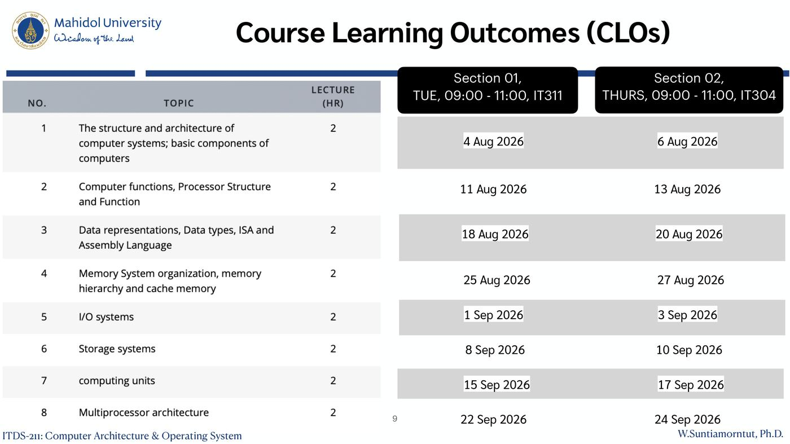

ภาพรวมบทนี้: สไลด์แนะนำวิชา ITDS-211 Computer Architecture & Operating System สอนโดย W. Suntiamorntut, Ph.D.
บทนี้ไม่มีเนื้อหาเทคนิค แต่บอกว่าครึ่งเทอมนี้เรียนอะไร ให้คะแนนอย่างไร ใช้หนังสือเล่มไหน และวัตถุประสงค์ของวิชาเชื่อมกับ CLOs อย่างไร
ใช้เป็น "แผนที่" ว่าแต่ละ Chapter ที่ตามมาอยู่ตรงไหนของวิชา
1. Course Information (สไลด์ 2)
| หัวข้อ | รายละเอียด |
|---|---|
| เอกสารประกอบ | อยู่ใน MyCourse ITDS211 |
| Office Hour | ห้อง IT236 วัน Thursday 15:00–16:30 |
Grading (รวม 50 คะแนน)
| ส่วน | คะแนน |
|---|---|
| Examination (Midterm) | 30 |
| Homework assignments | 15 |
| Quiz | 5 |
| รวม | 50 |
⚠️ Midterm มีน้ำหนักมากที่สุด (30 จาก 50) ส่วน Quiz มีแค่ 5 คะแนน
2. Course Description (สไลด์ 3)
สไลด์ให้คำอธิบายรายวิชาทั้งภาษาอังกฤษและไทย ครอบคลุมทั้งส่วน Computer Architecture และ Operating System
ภาษาอังกฤษ (ตามสไลด์): The structure and architecture of the computer systems; basic components of computers; data representations; the Assembly Language; memory system organization; the memory hierarchy; the cache memory; input and output systems; storage systems; computing units; the multiprocessor architecture; basic principles of operating systems; the computer resource management; the process management and scheduling; synchronization; deadlocks; memory management: segmentation and paging; the virtual memory; protection; sharing; the access control; file and I/O systems
ภาษาไทย (ตามสไลด์): โครงสร้างและสถาปัตยกรรมของระบบคอมพิวเตอร์ ส่วนประกอบพื้นฐานของเครื่องคอมพิวเตอร์ การแทนข้อมูล ภาษาแอสเซมบลี โครงสร้างระบบหน่วยความจำและการจัดลำดับชั้น หน่วยความจำแคช ระบบการรับเข้าและส่งออกข้อมูล ระบบการเก็บข้อมูล สถาปัตยกรรมของหน่วยประมวลผลแบบหลายหน่วย หลักการพื้นฐานของระบบปฏิบัติการ การจัดการหน่วยประมวลผลงานและการจัดลำดับงาน การประสานเวลา การติดตาย การจัดการหน่วยความจำ การป้องกันและการใช้ร่วมกัน ระบบแฟ้มข้อมูล ระบบข้อมูลเข้า-ออก
แบ่งหัวข้อในคำอธิบายเป็น 2 กลุ่มให้เห็นภาพ:
| กลุ่ม | หัวข้อ |
|---|---|
| Computer Architecture | structure & architecture, basic components, data representations, Assembly Language, memory system organization, memory hierarchy, cache memory, I/O systems, storage systems, computing units, multiprocessor architecture |
| Operating System | basic principles of OS, resource management, process management & scheduling, synchronization, deadlocks, memory management (segmentation & paging), virtual memory, protection, sharing, access control, file and I/O systems |
3. Course Outline — Half Semester (สไลด์ 4)
ครึ่งเทอมนี้เรียน 10 หัวข้อ (เฉพาะฝั่ง Architecture):
- The structure and architecture of the computer systems
- Basic components of computers
- Data representations
- The Assembly Language
- Memory system organization
- The memory hierarchy; the cache memory
- Input and output systems
- Storage systems
- Computing units
- The multiprocessor architecture
4. Textbooks (สไลด์ 5)
| # | ผู้แต่ง | ชื่อหนังสือ | ฉบับ / ปี |
|---|---|---|---|
| 1 | Hennessy and Patterson | Computer Architecture: A Quantitative Approach (Morgan Kauffman) | 7th edition, 2026 |
| 2 | William Stallings | Computer Organisation and Architecture | 11th edition, 2022 |
| 3 | David A. Patterson, John L. Hennessy | Computer Organisation and Design RISC-V edition: The Hardware Software Interface (Morgan Kaufmann Series) | 2020 |
5. Course Objectives (สไลด์ 6–7)
5.1 เป้าหมายของฝั่ง Computer Architecture (สไลด์ 6)
หลักใหญ่: ศึกษาบทบาทของ computer architecture ต่อ ประสิทธิภาพ (performance) ของระบบและโปรแกรม โดยตั้งคำถามว่า
- ส่วนไหนของการออกแบบ architecture ที่ส่งผลต่อ performance ของแอปพลิเคชัน
- องค์ประกอบหลัก (key components) ของ CA มีอะไรบ้าง
- architecture ของ processor สมรรถนะสูงในปัจจุบันเป็นอย่างไร
- แนวโน้มใหม่ (emerging trends) ของ CA คืออะไร
- ใช้แนวทางเชิงปริมาณ (quantitative approach) กับ CA
สิ่งที่วิชานี้ "ไม่ได้" สอน:
- Hardware design (การออกแบบฮาร์ดแวร์)
- รายละเอียดของ semiconductor technology
💡 วิชานี้มองคอมพิวเตอร์ในมุม "ออกแบบอย่างไรให้เร็ว" ไม่ได้ลงไปถึงการออกแบบวงจรหรือเทคโนโลยีชิป
5.2 Objectives 10 ข้อ (สไลด์ 7)
เมื่อจบวิชา นักศึกษาควรจะ:
- เข้าใจการจัดองค์กรพื้นฐานของ digital computer, pipelining และ parallelism
- อธิบาย instruction execution, ISA format และ addressing mode ได้
- ประเมิน performance metrics ได้
- อธิบาย memory hierarchy ได้
- อธิบาย I/O organisation ได้
- อธิบาย process management ได้
- เข้าใจ concurrency และ synchronisation
- วิเคราะห์ deadlocks ได้
- เข้าใจ memory management
- อธิบาย file systems ได้
💡 ข้อ 1–5 เป็นฝั่ง Architecture ส่วนข้อ 6–10 เป็นฝั่ง OS
6. Course Learning Outcomes — CLOs (สไลด์ 8)
| CLO | เนื้อหา (ตามสไลด์) | มาจาก Objectives | กลุ่ม |
|---|---|---|---|
| CLO 1 | อธิบาย basic organisation ของ digital computer รวมถึง instruction execution, ISA formats, addressing modes, pipelining, parallelism | 1, 2 | Architecture fundamentals |
| CLO 2 | ประเมิน computer performance metrics และอธิบาย memory hierarchy กับ I/O organisation | 3, 4, 5 | Performance & hardware resources |
| CLO 3 | อธิบาย process management, concurrency, synchronisation และวิเคราะห์ deadlocks ใน OS | 6, 7, 8 | OS process/concurrency topics |
| CLO 4 | เข้าใจ memory management และ file systems ใน OS | 9, 10 | OS storage management |
ลำดับที่สไลด์สรุปไว้: Architecture basics → performance/hardware → OS process handling → OS storage handling
7. ตารางเรียน (สไลด์ 9)
- Section 01: วันอังคาร (TUE) 09:00–11:00 ห้อง IT311
- Section 02: วันพฤหัสบดี (THURS) 09:00–11:00 ห้อง IT304
- ทุกหัวข้อใช้เวลา lecture 2 ชั่วโมง
| No. | Topic | ชม. | Section 01 | Section 02 |
|---|---|---|---|---|
| 1 | The structure and architecture of computer systems; basic components of computers | 2 | 4 Aug 2026 | 6 Aug 2026 |
| 2 | Computer functions, Processor Structure and Function | 2 | 11 Aug 2026 | 13 Aug 2026 |
| 3 | Data representations, Data types, ISA and Assembly Language | 2 | 18 Aug 2026 | 20 Aug 2026 |
| 4 | Memory System organization, memory hierarchy and cache memory | 2 | 25 Aug 2026 | 27 Aug 2026 |
| 5 | I/O systems | 2 | 1 Sep 2026 | 3 Sep 2026 |
| 6 | Storage systems | 2 | 8 Sep 2026 | 10 Sep 2026 |
| 7 | computing units | 2 | 15 Sep 2026 | 17 Sep 2026 |
| 8 | Multiprocessor architecture | 2 | 22 Sep 2026 | 24 Sep 2026 |

⚠️ สไลด์หน้านี้ใช้หัวเรื่องว่า "Course Learning Outcomes (CLOs)" แต่เนื้อหาจริงคือตารางเรียน
คำศัพท์สำคัญ
| คำศัพท์ | ความหมาย | จำง่าย ๆ ว่า |
|---|---|---|
| Computer Architecture (CA) | โครงสร้างและการออกแบบระบบคอมพิวเตอร์ที่ส่งผลต่อ performance | ครึ่งแรกของวิชา |
| ISA | Instruction Set Architecture — รูปแบบคำสั่งที่ CPU เข้าใจ | อยู่ใน Objective 2 / CLO 1 |
| Addressing mode | วิธีระบุตำแหน่งข้อมูลในคำสั่ง | อยู่คู่กับ ISA |
| Pipelining / Parallelism | การทำงานซ้อนกัน / ทำงานพร้อมกันหลายส่วน | อยู่ใน Objective 1 |
| Performance metrics | ตัวชี้วัดประสิทธิภาพ | Objective 3 = "Evaluate" |
| Memory hierarchy | ลำดับชั้นของหน่วยความจำ | Objective 4 |
| CLO | Course Learning Outcome — สิ่งที่ต้องทำได้เมื่อจบวิชา | มี 4 ข้อ รวมจาก 10 objectives |
| Quantitative approach | วิเคราะห์ architecture ด้วยตัวเลข | ชื่อหนังสือเล่มแรกด้วย |
สรุปท้ายบท / จุดที่ควรจำ
- คะแนน 50: Midterm 30 + Homework 15 + Quiz 5
- Office hour: IT236 วันพฤหัส 15:00–16:30 | เอกสารอยู่ใน MyCourse ITDS211
- Sec 01 อังคาร 09:00–11:00 IT311 | Sec 02 พฤหัส 09:00–11:00 IT304 | 8 หัวข้อ หัวข้อละ 2 ชม. (4 ส.ค. – 24 ก.ย. 2026)
- วิชานี้เน้นว่า architecture ส่งผลต่อ performance อย่างไร — ไม่สอน hardware design และรายละเอียด semiconductor
- Objectives 10 ข้อ → CLOs 4 ข้อ: CLO1 ← 1,2 | CLO2 ← 3,4,5 | CLO3 ← 6,7,8 | CLO4 ← 9,10
- หนังสือ 3 เล่ม: Hennessy & Patterson (Quantitative Approach, 7th 2026), Stallings (11th 2022), Patterson & Hennessy (RISC-V edition 2020)